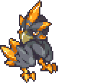
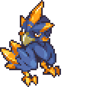
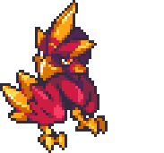

| ← #013 Silquill | #014 Gildwing | #015 ??? → |
|---|
| Normal Form | Corodex Description | Type |
|---|---|---|
|  | Gildwing build their nests in remote places. Once found however, they are more often filled with gold than with eggs. |  |
| Potent Form | Locations Data | Evolution Line |
|  | - Evolve Silquill | - Silquill - Gildwing (Level 15) - ??? (Level ???) |
| Perfect Form | Traits | |
|  | - Escapist (35/70) - Robber (35/70) |
| Stats | |
|---|---|
| HP | 64 |
| Attack | 34 |
| Defense | 31 |
| Sp. Attack | 28 |
| Sp. Defense | 28 |
| Speed | 40 |
| Skill set | |
|---|---|
| Level 1 | Claw |
| Level 4 | Pocket Sand |
| Level 6 | Fast Strike |
| Level 9 | Coin Snatch |
| Level 14 | Wind Blast |
| Level 17 | Agility Training |
| Level 23 | Distract |